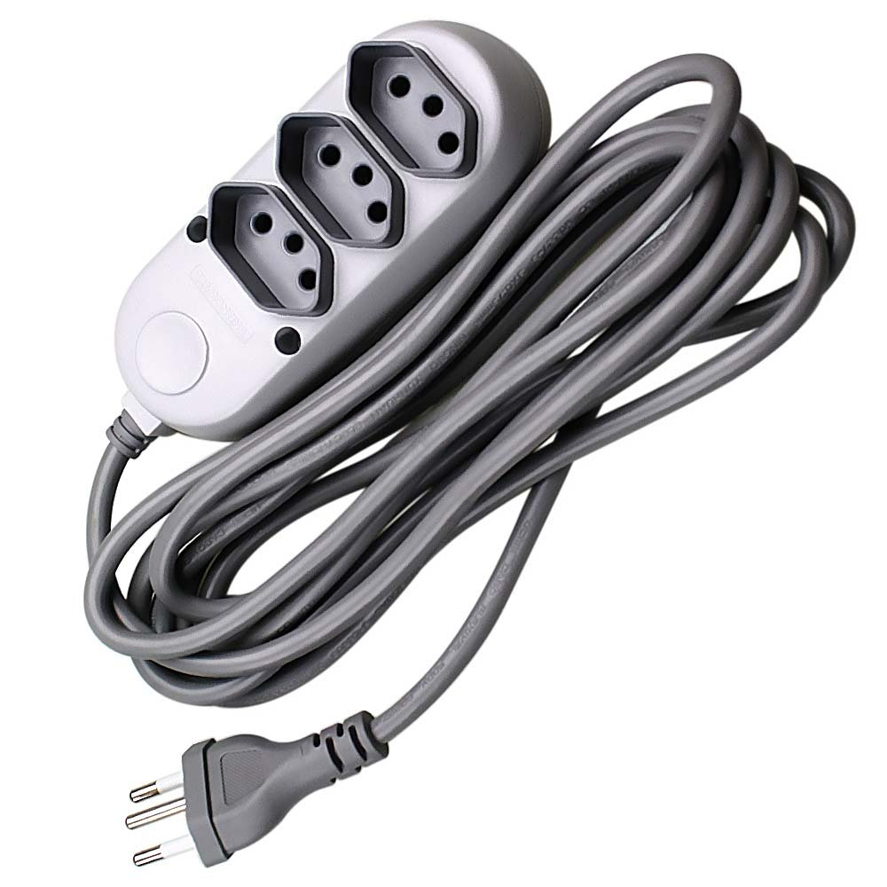

Métodos de extensão são um recurso muito interessante para estendermos alguma classe já existente, independente dela ter sido criada por nós mesmo, uma biblioteca de terceiros ou até mesmo da própria microsoft.
Imagino que a maioria dos devs já passou pela situação de utilizar alguma biblioteca e pensar “nossa bem que podia ter uma função X aqui!”.
Mas porque não voce mesmo extender essa biblioteca para atender todas as suas necessidades hem?
Vamos direto ao exemplo!
void Main()
{
var teste = "Rafael".GerarTag();
Console.WriteLine(teste); //<Rafael />
var teste2 = "Rafael".GerarTag("Orion"); //<Rafael>Orion</Rafael>
Console.WriteLine (teste2);
}
public static class HtmlExtension
{
public static string GerarTag (this string value)
{
return "<" + value + " />";
}
public static string GerarTag (this string value, string value2)
{
return "<" + value + ">" + value2 + "</" + value + ">" ;
}
}
No exemplo acima criamos 2 métodos que estendem a classe string transformando um texto em uma tag html.
Desde que a HtmlExtension esteja na mesma namespace ou a referencia ao namespace esteja adicionada, qualquer strings terá esses 2 novo métodos disponíveis, parece até magica. ;)
Para criar uma classe de extensão precisamos seguir algumas regrinhas simples, primeiramente a classe e os métodos devem ser do tipo static.
Mas oq transforma efetivamente o método estático em uma extensão é o uso do this localizado no primeiro parâmetro da função.
public static string GerarTag (this string value)
No exemplo acima, como o this está antes do parâmetro do tipo string, isso indica que ele será uma extensão da classe string, nesse caso como só temos um único parâmetro que faz a referencia para a base da nossa extension, na hora do uso não será necessário passar nenhum parâmetro, pois o this indica que o valor da própria variável será utilizado para popular esse parâmetro automaticamente.
public static string GerarTag (this string value, string value2)
Nesse caso, além da referencia para a nossa extension temos mais um parâmetro, somente o segundo parâmetro será necessário durante o uso conforme os exemplos anteriores.
Bem simples não? a mesma lógica vale para qualquer tipo de classe até mesmo as suas próprias classes.
Até a próxima.